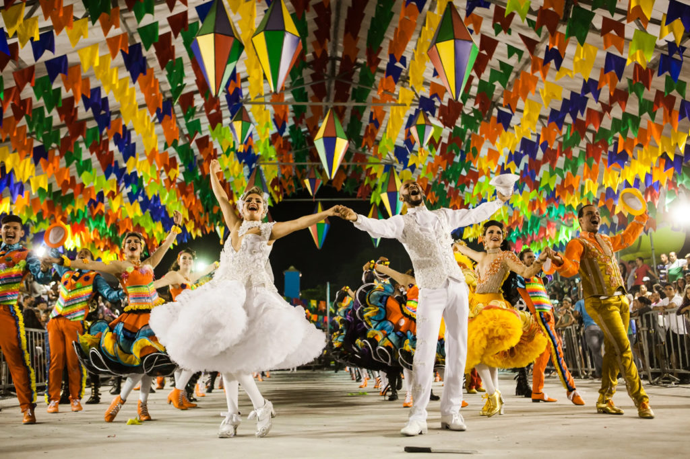

20º Arraiá do Colégio Barbosa Ferraz
Uma tradição que une toda a comunidade escolar em celebração à cultura caipira
Uma tradição que une toda a comunidade escolar em celebração à cultura caipira

Decoração típica do Arraiá do Barbosa Ferraz em edições anteriores
O Arraiá do Barbosa Ferraz é um dos eventos mais esperados do ano letivo, celebrando suas duas décadas de tradição. O que começou como uma pequena festa junina entre alunos transformou-se em um grande evento que ocupa toda a estrutura da escola.
Neste ano especial de 20ª edição, teremos atividades distribuídas por todos os espaços do colégio, garantindo diversão para todos os participantes.
A festa contará com comidas típicas, apresentações culturais, quadrilha organizada pelos alunos, barracas de jogos e muito mais. Toda a renda obtida será revertida para melhorias na estrutura escolar.
Momento da quadrilha caipira em edições passadas do evento
8 de Julho de 2025
A partir das 18h até às 23h
Colégio Estadual Barbosa Ferraz
Toda a estrutura da escola
Ivaiporã - PR
Único: R$ 30,00
Vendas na secretaria da escola
• Apresentações culturais dos alunos
• DJ com músicas típicas e populares
• Quadrilha tradicional
• Danças típicas regionais
• Doces e salgados tradicionais
• Bebidas típicas da festa junina
Acompanhe nossa rede social para mais informações!